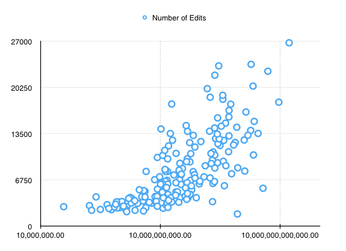

INTRODUCTION
We hypothesize that the amount of attention a country receives on Wikipedia is positively correlated to that country’s economic success. In this way our knowledge of different areas of the world is indirectly influenced by the global economy.
A country’s attention on Wikipedia can be defined in many ways. In this project, it is defined as a combination of:
- Number of edits.
- Number of forward links.
- Page size.
- Number of citations.
Meanwhile, a country’s economic success is defined by its GDP.
Data
We used two primary sources of data:
Wikipedia Pages
There were several different options we could use to determine whether or not a pge is related to a particular country:
- Pages with the country name in the title. Here is the list of pages with the term "Brazil" in its title.
- Portal pages. Here is the portal page for Brazil.
- Category pages. Here is the Category page for Brazil.
- Index pages. Here is the page for "Index of Brazil-related pages".
- Outline of country pages. Here is the "Outline of Brazil" page.
- Related topics listed at the bottom of a country's page.
In the end, we decided to use the Category pages at it seemed to be the most up-to-date and standardized list among the others.
We also scraped past revisions of each page to provide us with data to compare to past GDP values. At the top right section of a Wikipedia page, there is a tab called "View history" which lets us view past revisions. We wrote a Python script to dowload one revision (the latest one) for each month since the page was created. Downloading all of the past revisions would give us too many files.
In total, we downloaded 1,634,173 pages, which take up 116GB and took approximately 1 week to download.

World Bank Data
World Bank statistics, which contains GDP data along with other data such as life expectancy, poverty rate and school enrollment rate. World Bank provides these information in several different formats, including CSV format. These demographics from the World Bank have already been collected and cleaned.
Methodology
Collecting Data
We scraped the Wikipedia pages using a Python library called BeautifulSoup. We ran extract_states.py to first extract the list of countries on Wikipedia, and then category_downloader.py to extract a list of the associated pages through the Category page.
We stored the Wikipedia articles in plain text and ran wiki_attention.pyextracted the desired features locally, and store them in CSV files.
The original goal for this project is to use data from 25 different countries. However, upon writing the Python scripts, we realized that we could download data from all the countries listed on Wikipedia.
Timeline
| Task | Hours | Deadline |
| Determine pages to scrape | 2 | April 5th |
| Identify a process to scrape past revisions | 4 | April 9th |
| Scrape the pages | 3 | April 12th |
| Extract features from scraped pages and convert to CSV | 4 | April 18th |
| Apply machine learning to extracted features and demographics. Tweak. Repeat. | 14 | April 30th |
| Visualize (depending on findings) | 3-6 | May 2nd |
| Write-up | 4 | May 5th |
| Design and Print Poster | 3 | May 7th |
Deliverables
- 75%: Poor analysis of data using machine learning of only an insufficient number of countries. Boring, standard visualizations
- 100%: Great analysis of the data as outlined above, using 25 different countries and a decent set of visualizations.
- 125%: Study of 100 countries. Further analysis including modeling based on geographic regions. Elaborate visualizations, perhaps including advanced map projections to demonstrate regional differences in the influence on Wikipedia.
Backup Plan
In case we fail to discover a correlation between Wikipedia attention and the economic success of a country, we will report the negative results, and attempt to find a correlation with a different demographic listed on the World Bank database.
Findings
The first thing we did was to plot the number of citations, forward links and file sizes of a particular country over time, and compare it to the GDP of that country. Although we found that generally, a country with a high GDP also has a high Wikipedia attention, we found that this does not mean a sharp decrease in GDP affect the Wikipedia attention in the same way (i.e. decrease the amount of Wikipedia attention). It is very unlikely that the number of pages related to a country would decrease, or that the length of the article would decrease.
Looking at the graph of GDP vs. average file size of pages related to the USA shows that there is generally a positive correlation between the two metrics:
However, looking at the graph of GDP vs. average file size of pages related to Greece shows that the relationship is not as straightforward as we thought it would be:
There is, however, a reasonable explanation for this. In 2008, many countries experienced the Great Recession, which explains the drop in the GDP for the two graphs above, but more specifically for the graph of Greece's GDP. In other words, economies can shrink. On the other hand, it is very unlikely that Wikipedia articles will shrink, or decrease in attention, as defined by our metrics above (i.e. no one will see it fit to remove information from Wikipedia). Therefore, we were not able to predict a country's Wikipedia attention over time through their GDP.
We also tried visualizing the number of edits per country on a world map:
100
For comparison, here is a world map displaying countries according to their GDP:
100
Through the visualization above, we found that generally, countries with higher GDP have a higher number of Wikipedia edits over all their associated Wikipedia pages over time. Here are the countries with the most number of page edits, along with their GDP:
| Rank | Country | Edits | GDP (current US$) |
| 1 | United Kingdom | 36671 | 2,678,454,886,796 |
| 2 | United States | 26782 | 16,768,100,000,000 |
| 3 | India | 23635 | 1,875,141,481,990 |
| 4 | Israel | 23414 | 290,550,599,943 |
| 5 | Japan | 22629 | 4,919,563,108,372.5 |
We also created a scatter plot of all the countries, to compare its GDP with its number of edits:
We also calculated the Pearson correlation between all the GDP metrics and the countries' number of citations, file sizes as well as number of forward links. Here are the metrics with the highest Pearson correlation:
- Citations with GDP (2005 US$): 0.724
- Citations with GNI, Atlas method (current US$): 0.707
- Citations with GNI (current US$): 0.7066
- Citations with GDP (current US$): 0.7061
- Citations with number of secure Internet servers: 0.681
Meanwhile, the metrics with the lowest (absolute) Pearson correlation are:
- File size with freshwater withdrawal: -0.000997
- File size with ratio of women in ministry: 0.00225
- Links with freshwater withdrawal: -0.00522
- Links with pre-primary entrance age: 0.00753
- Citations with freshwater withdrawal: 0.00891
Additionally, we tried to model the data based on geographical regions:
100
Challenges
Data Collection
Determining which pages were associated with a country was harder than we thought. As stated earlier in the Data section, there were multiple options we could use. Ultimately, we decided that it would be best for us to use the Categories page as it was the most standardized and up-to-date list.
The next challenge was deciding how deep we should look into the Categories page, as each category had subcategories, each subcategory and its own subcategories, and so on. We had to regulate our search depth because categories and subcategories tended to overlap, leading to unrelated pages. Moreover, we also had to regulate the search depth in order to reduce the volume of data.
Here is an example of some pages associated with Austria to demonstrate how wide our search is:
- Grand Duchy of Tuscany (link)
- Vienna Summer of Logic (link)
- Praetorian prefecture of Illyricum (link)
Here are some pages associated with Sierra Leone:
- Armed Forces Revolutionary Council (link)
- Parliament of Sierra Leone (link)
- Islam in Sierra Leone (link)
We also had to handle 404 and 500 Errors.
Sparse Data
Not all Wikipedia pages have been around since 2001, and most Wikipedia pages aren't updated every month. Therefore, when we first tried to project the number of edits on a Wikipedia page on a matrix, the dataset was very sparse! We had to transform the data we had into a dense matrix representation before we could do some data crunching on the dataset.
Entity Resolution
We have two primary sources of data—-Wikipedia and the World Bank. However, there are several countries recognized by Wikipedia but not by the World Bank (such as Somaliland, Nagorno-Karabakh Republic, and South Ossetia), and vice versa (St. Martin, Sint Maarten, and Macao are some examples). Moreover, the names of different countries are listed differently on different sources. For instance, Macedonia is known as the Republic of Macedonia on Wikipedia, but Macedonia, FYR on the World Bank. North Korea is known as North Korea on Wikipedia, but Korea, Dem. Rep. on the World Bank.